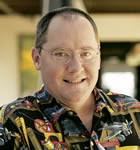
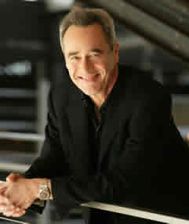

team
Find out more about Pixar's Team
Official Info on Executivesimportant people at pixar
Edwin Catmull
Ed Catmull is the current president of Pixar. Inspired by early cel-animated Disney movies, Catmull developed an interest in animation. However, he first devoted his talent in math and physics to study of computer sciences at the University of Utah. Realizing that working with computer animation allowed him to combine his interests, Catmull contributed to the CGI revolution by discovering texture mapping and bicubic patches. He developed anti-aliasing and rediscovered z-buffering. He was hired first by the New York Institute of Technology to be a computer graphics lab director, but later moved to Lucasfilm's graphics division before it was purchased by Steve Jobs and became Pixar.
John Lasseter
John Lasseter is the Chief Creative Officer at Pixar and Walt Disney Animation Studios, as well as the Principle Creative Advisor for Walt Disney Imagineering. Lasseter had dreamed of becoming an animator at a very young age. He enrolled in the California Institute of the Arts and was taught by Eric Larson, Frank Thomas, and Ollie Johnston, three of Disney's Nine Old Men. He studied with Brad Bird, John Musker, Henry Selick, and Tim Burton at the Institute.
Later working for Disney first as a Jungle Cruise skipper at Disneyland Anaheim and eventually an animator at Walt Disney Feature Animation, Lasseter felt something was missing from Disney. Without permission, he extensively planned a 3D film that would use computers to add depth. Unfortunately, this led to his work at Disney being terminated.
Lasseter had contacted Alvy Ray Smith and Edwin Catmull from Lucasfilm Computer Graphics Group while planning his 3D film, and was able to be employed as a layout manager for Catmull while creating their first short, The Adventures of André and Wally B.
After Steve Jobs acquired and formed Pixar, Lasseter was involved in all of Pixar's films as a producer, director, or story writer. He later became chief creative officer and theme park Imagineer in Disney as well.
Jim Morris
Jim Morris is the General Manager and Executive Vice President of Pixar. He runs every day activities in the studio and manages the team while in production of a film. Morris represents Pixar in keynotes or other presentations where he announces upcoming projects.
Morris holds a B.S. degree in film and an M.S. in film and radio from Syracuse University. He founded the Visual Effects Society and is a member of both the Academy of Motion Picture Arts and Sciences and the Producers Guild. He had previously worked as a special effects superviser for Industrial Light and Magic before joining Pixar in 2005.
Steve Jobs
Steve Jobs provided the finincial resources for Pixar to be successful. He initially purchased the company as the Graphics Group from Lucasfilm in 1986 for $10 million, giving $5 million to the company as capital. Jobs contracted several agreements with Disney allowing Pixar to publish their films. In 2006 Jobs and Bob Iger from Disney agreed that Pixar would be transferred to Disney in an all stock transaction worth $7.4 billion. Jobs later joined the Disney board of directors.
Bob Peterson
Bob Peterson has worked for Pixar since 1994 starting with Toy Story. Peterson is an animator, layout artist, screenplay writer, co-director, and story supervisor. He also voices minor characters for many Pixar films.
Bud Luckey
Bud Luckey is a charater designer, story board artist, and animator for Pixar. He has worked on almost all of Pixar's feature films. Luckey's most famous work is likely Boundin', which he wrote, directed, scored, and produced.
Luckey served in the United States Air Force in the Korean war. He was a Disney scholar, and worked as an animator for The Chipmunks and several television commercials. Luckey has also animated several shorts for Sesame Street.
Luckey joined Pixar in 1990. He worked extensively on the characters for Toy Story such as Woody. Andy is actually named after Luckey's son. In 2003, Luckey worked on Boundin'. Luckey does occasional voices for Pixar films, and will be featured in Toy Story 3.
Copyright © 2010